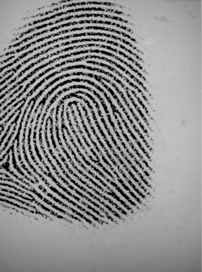
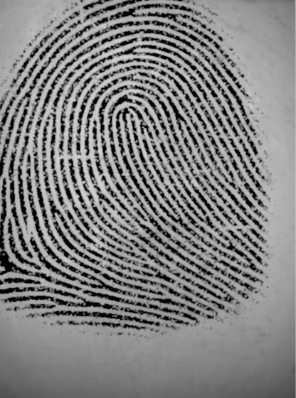

×
Fingerprint Comparison - Ghost Logoff
← Back to Crime Scene
Mark Ridge
Mark Bifurcation
Remove Mark
Clear All
For the best experience, press
F11
to enter fullscreen mode.
Unknown Partial Print
Marcus Ellery (Victim)

Suspect 1:
Eli Navarro

Suspect 2:
Mrs. Monroe
(Tess's mother)
Suspect 3:
Mr. Weller
Suspect 4:
Tess Monroe